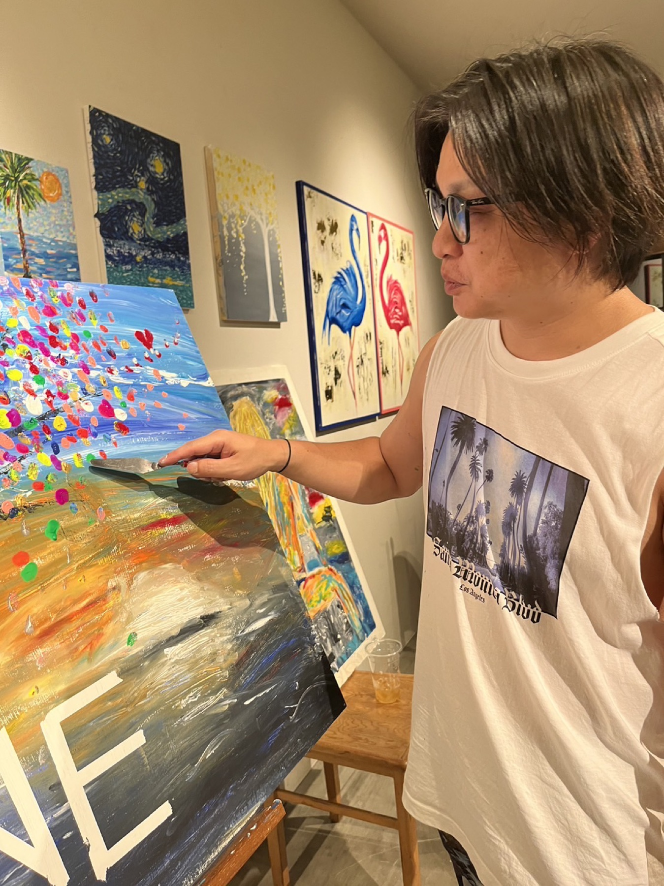
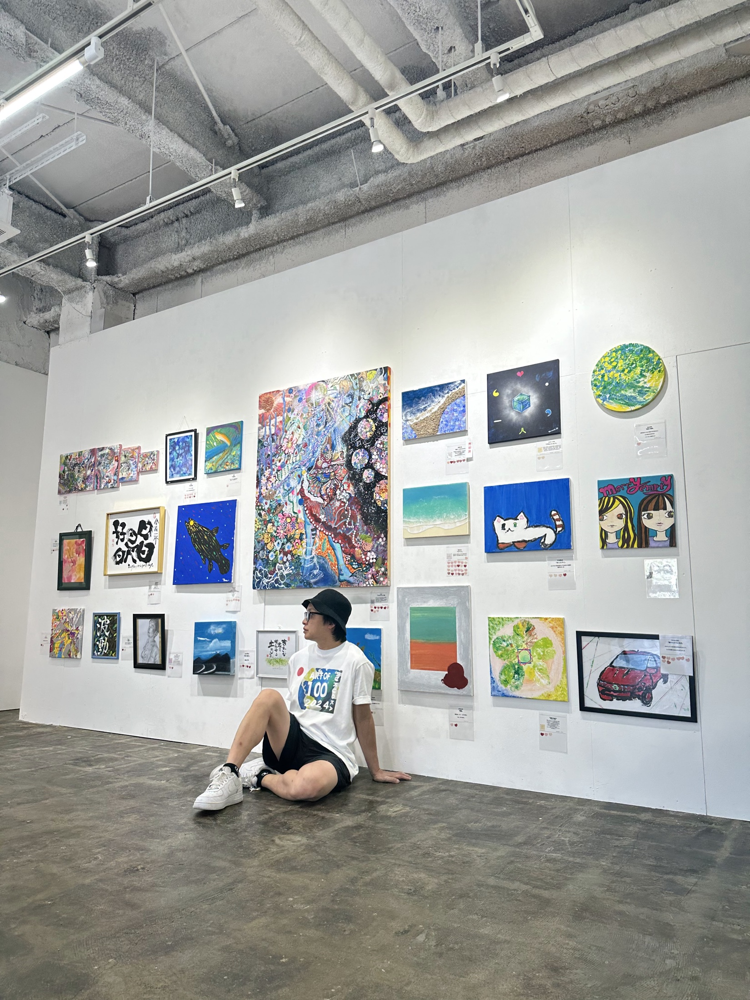

石丸篤史。真剣と書いて、遊びと読む。ヘアメイク、デザイン、アート、イベント、AIが仕事です。
ヘアメイクデザインアートイベントAI
01THE IDEA / 表現する自由
真剣と書いて、遊びと読む。
いまの自分を、
出していい。
人目を気にせず、現在の自分を表すこと。
表現の仕方に、決まった正解はありません。
僕は、自分にできる方法で、それを続けてきました。
石丸篤史について↗
02WHAT I DO / 表現の手段
ヘアメイクから始まり、デザイン、アート、イベントへ。
表現する対象や方法を変えながら、活動を広げてきました。
03MAKE A PLACE / 場をつくる

自分が表現する。
その先に、
人が表現できる場を。
「100人のアーティスト展」を主催。出展する人たちも運営に参加し、一緒に場をつくっています。
4開催回数
441累計出展者数
1,530累計来場者数
04AI / これからの手段
AI × HUMAN TIME
仕事を、
もっと身軽に。
AIを使った仕事の効率化も応援しています。
人が、自分の時間をもっと自分らしく使えるように。
AIの活動について見る↗05ART FOR BEING
生きることを、
表現しよう。
企画も、作品も、まだ名前のないアイデアも。
一緒に、かたちにしていきたい。